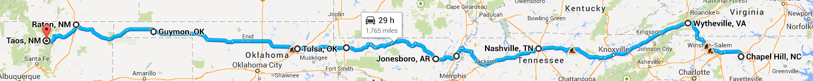
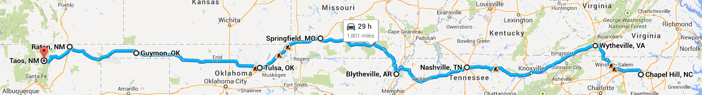
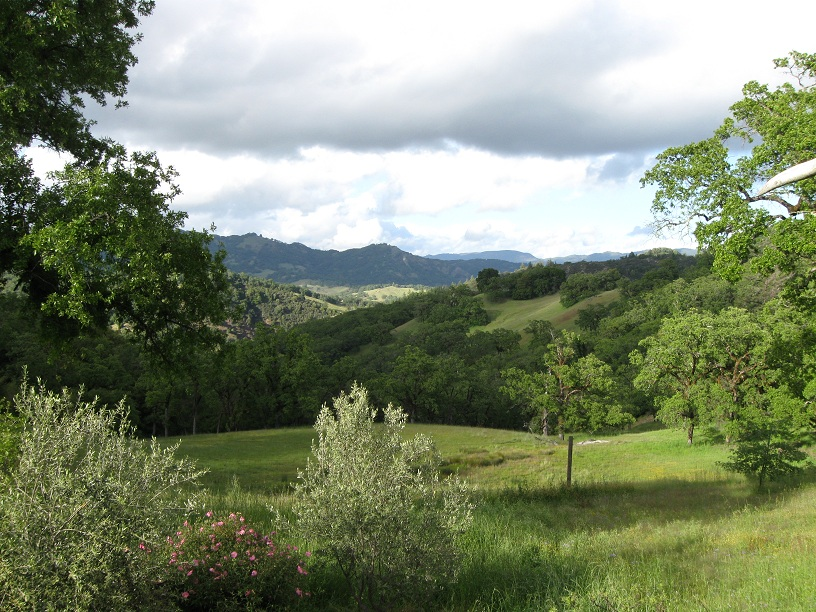
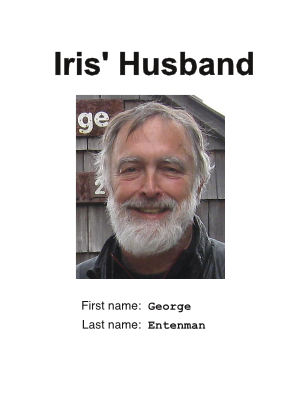

Link to spreadsheet in Google Docs.
Check-in begins at 1pm at the Sagebrush Inn in Taos (schedule) on Saturday, July 12th, but conference registration doesn't begin until 3pm, Sunday, July 13th. So why get there before the 13th?
There are two variations on the route that differ only in the way we go from Blytheville, AR, to Tulsa, OK.

After talking with Celisa, we might take this alternative that avoids going through Springfield, MO (link). It visits the following cities:
The trip takes 1765mi/29:00.

Here is the route that we will probably not take. It visits the following cities:
The trip takes 1801mi/29:00.
We will stay in a motel and visit Don and Lori.
We should also be sure to visit the famous bookstore that David Perry told me about. It's apparently John Grishom's favorite.
I see four alternatives, in my order of preference:
Blytheville - Springfield - Tulsa - Guymon - Raton - Taos: 1055mi/17:32 (via US 64W) (link)
Blytheville - Little Rock - Oklahoma City - Raton - Taos, NM: 1063mi/16:41 (via I-40) (link)
Blytheville - Little Rock - Oklahoma City - Taos, NM: 1048mi/16:31 (via I-40) (link)
Blytheville - Jonesboro - Springdale - Tulsa - Guymon - Raton - Taos: 1019mi/17:52 (via US 64W) (link)
Lynn will be there!
Amber may be in Taos. Grace has two possible addresses for her:
03 Calle Rinconeda
Rancho de Taos NM 87557
P O Box 1646
El Prado NM 87529-1646
Dear Amber,
Iris and I plan to be at the Sagebrush Inn in Taos from July 13 through July 20th. Iris will be very busy in poetry workshops while I will be exploring Taos and surroundings and seeing old friends like you, I hope.
Grace gave us two possible addresses for you but didn't remember which is current, so I'm sending two letters in hopes of contacting you.
My mobile phone number is 919-636-5496. My email is: ge@entenman.net. Iris' etc: 919-414-8819 and iris@entenman.net. We will be at the Sagebrush Inn, which you are surely familiar with.
I hope we can meet and catch up while we're there.
Monument valley is located on US Highway 163 and is 25 miles from Mexican Hat, UT, 51 miles from Bluff, UT and 77 miles from Blanding, UT. It is also 22 miles from Kayenta, AZ and 121 miles from Page, AZ.
Monument Valley belongs to the Navaho Nations. The capital of the Navajo Nation is Window Rock, Arizona.
We should stop at the Monument Valley Visitors Center.
Fodor's guide recommends staying at Goulding's Lodge which has views of Monument Valley! Web pages related to them don't seem to work, at least from the CH Public Library. Kayak doesn't seem able to get prices. I may need to call.
Our reservation is for an apartment, which has several rooms and is separate from the Lodge. This is because there is a room with a queen bed on the 21st but not the 22nd. I need to call now and then to see if someone has cancelled.
The "only hotel actually inside the tribal park" is The View Hotel. The cheapest room now is $517!!
They mention San Juan Inn & Trading Post in Mexican Hat. It's a lot cheaper and on the way!
Frommer's guide (917.9043 Kin 2008) is a lot easier to read than Fodor's. It recommends the 17-mile Valley Drive and make it sound as if we should get someone to drive us. Tours get to visit places off the Drive. Make sure a tour sees arches and petroglyphs. They like Goulding's tours.
Sacred Monument Tours has all kinds of tours, vehicle, horse, walking.
Bluff, just north of Mexican Hat might be a good place to stay, too.
Janice Booth said we should go to the area where people wait for tourists and talk to different people. But I forget exactly what her advice was about places to see.
Maria Martin said to see:
Note: Day One app developer might be in Salt Lake City check.
Google maps says that it's 999 miles and can be driven in 15 hours.
Dear Lynn
Google suggests a driving time from Taos to Port Angeles, Wash. of ~27 hours—say three days of steady driving, four or five with a chance to look at some scenery. From Pt. Angeles a car ferry runs 4 times a day in summer, the MV Coho, taking 90 minutes to cross to Victoria. So this would work! We’d have a week at a minimum, maybe more.
[map](https://maps.google.ca/maps?ie=UTF-8&gl=ca&daddr=Port+Angeles,+WA,+USA&saddr=Taos,+NM,+USA&panel=1&f=d&fb=1&geocode=KbH8EX_aZBeHMYK3qWGDkeqQ%3BKUfn58AMUo5UMdmlT2OMYbxd&ei=UInmUtOvFMXxoATE44HABg&ved=0CIcBEPgPMAs)
You’d need a reservation on the Coho, which can be googled (it’s owned by Black Ball Ferries). The customs formalities aren’t too bad leaving the US; as I remember you have to be at the ferry dock an hour or two before sailing.
Start planning!
| [Triptik](http://ww1.aaa.com/scripts/WebObjects.dll/AAAOnline.woa/5009?association=aaa&poiKey=1&club=111&version=2013&subCommand=routeLocs&routeLocs=Address | 3257%20N%20Shadowbrook%20Cir%20 | Provo%2084604 | UT | %20 | %20 | %20 | Address | %20 | Boise%20 | ID | %20 | %20 | &page=ITTServices&sessionRedirect=1400009271517&zip=27514&stateprov=nc&city=chapel+hill&devicecd=PC) |
Barry Eschen lives in Boise.
It takes 11h to get to Yakima.
It would take about 4h 26m to take the 206 mile route by Mt Rainer.
Tom Foley lives 3 miles from Port Townsend, WA
| It's only about an hour [from Chimacum, WA to Port Angeles, WA](http://ww1.aaa.com/scripts/WebObjects.dll/AAAOnline?association=aaa&club=111&page=ITTServices&subCommand=routeLocs&version=2013&routeLocs=Address | + | chimacum%20 | wa | %20 | %20 | %20 | Address | + | port+angeles%20 | wa | %20 | %20 | &poiKey=0). So we could get to Victoria in one day very easily, provided we get up early! |
Trip confirmation: #592961FB
We hope to take the boat to Vancouver, where we may stay for one night before returning.
One thing that we should do there is to visit Stanley Park.
Harry says that if we go via ferry from Anacordes, we have to get there by about 7:30 for customs.
Don stationed on Widbey Island.
Grace,
Iris and I have just spent an hour trying to figure out our schedule this summer after Iris' workshop in Taos.
So far we are sure of our schedule as far as Yakima (we have stops in Monument Valley and Provo UT). We know we will leave Yakima on July 26th and we know we have to leave Victoria, BC on August 6th.
So…. Between those two dates we hope that we can visit you on Whidbey Island. Our schedule currently has us getting there on July 28th, staying one day, and leaving on July 30th.
Would this be possible and agreeable to you? If so, could you let us know ASAP? The hurry is that I need to make ferry reservations to get to Victoria, BC. Speaking of which, do you know if we could get from your place to Victoria in one day? It looks as if it requires two ferry rides.
We are really looking forward to seeing you and hoping that these plans work out. If the dates we need are simply wrong, but there are other dates after that, let us know: perhaps we could change our route and get there a few days later.
My best friend Mark from high school always used to talk about Whidbey Island. I don't remember if he lived there, but he sure spent time there as a boy. Iris and I will spend several days with Mark in Cloverdale, CA, on our way down the coast, and it would be fun to tell him what the place is like now.
Iris also tells me that Amber is in Taos, where I will have a lot of time on my hands! So I hope we get to see her. Do send us her contact info.
I have no idea where you are. That's the wonder of email, I guess: I don't have to know. Kind of amazing still.
All my best, ge
Where shall we stay? I'm going to plan to find a place to stay for the night and leave the next day.
I don't know why AAA shows two possible, parallel routes, but it should be easy to switch between the two, as needed.
Where are the Hobarts?
Hello Iris and George….
To the best of my knowledge, I will be on site in the wilds of southern Mendocino County mid August and would be delighted to connect with you. If Simone has told you about what "wilds" means then you will already have an inkling about whether or not you would like to brave a stay at my place. You'd be most welcome. Otherwise, or in addition, I'd be happy to play tour guide.
I'll be out of town from august 3 to about the 10th, plus or minus, but after that will be staying put in "outer Yorkville".
Do you have an ETA in Cloverdale? A list of must-do things? Trivia night at the Boonville hangout? I fear we can no longer offer fist fights and bloodshed as the local bar has been closed for about a year and had actually been toned down and gussied up years before that. But there are tales……
Best, Jill
Dear Jill,
Thank you so much for your wonderful email!
Please excuse the delay in replying: I've been on the phone with Mark Grandy, my best friend since junior high school in Berkeley, trying to figure out our itinerary. Mark lives in Cloverdale. Here\’s our proposed schedule re: Cloverdale:
Sunday, Aug 17 - drive to Cloverdale from Medford OR, where my sister lives. Tuesday, Aug 19 - go to Gualala, where we will stay in the Breaker Inn Thursday, Aug 21 - return from Gualala to Cloverdale. Mark thinks we will go by your place along the way and can visit then.
Does this seem feasible to you? I'm sure that whatever we do together will be fun. I'm sure you'd enjoy Mark and his wife Xandra, who used to teach elementary school and is now a very accomplished painter. And, of course, there's my incomparable wife, Iris Tillman Hill.
To the best of my knowledge at this point, August 21 is just fine. Plans can be fine-tuned later depending on weather, etc. The four of you will be traveling together? Sounds like grand fun and I'd enjoy meeting folks from Cdale, where I've only one acquaintance. It is really lovely here, see attached photo from my deck looking NE, but late August can be brutally hot and dry. Or not. I have room to house you all for overnight or longer, but bear in mind that it's a 35 minute drive from Hwy 128 on a 9 mile dirt road that's very well maintained but is happiest with a 4WD or AWD car on its surface. Driver is happier, too. Again, it can be played by ear. An alternative to R and R in the wild would be to spend a day together in Anderson Valley, check out Hendy Woods State Park (one of the last patches of virgin redwood forest in the area), a couple of wineries, a good lunch or dinner…..Your choice….
Enjoy Gualala where it will be cool and foggy. The hotter it is inland, the chillier on the coast. Gualala is pronounced Wa-la-la, accented equally on each syllable….Feliz Creek, which flows through a portion of my property, is pronounced Fay-lis, accent on first syllable–the legacy of many a 19th century old timer.
Simone filled me in on Iris's bio and my guess is that given her documentary film interest we'll know or know of folks in common. Simone was mum about you, so I duckduckgoed (I boycott google) you but without joining linked in found little in a minisearch. What's an Education coordinator?
We'll be in touch as the time nears, I'm sure.

Dear Jill,
I have room to house you all for overnight or longer, but bear in mind that it's a 35 minute drive from Hwy 128 on a 9 mile dirt road that's very well maintained but is happiest with a 4WD or AWD car on its surface. Driver is happier, too.
When Iris signed up to go to Taos in July to study poetry, she said she would have to buy a new car, and she did: a Passat TDI, a fabulous road car. By the time we get out of Monument Valley after leaving Taos, we should have an idea of how the car will perform on your dirt road. If we're unsure, I'm pretty sure that Mark has some kind of pickup that might carry us all.
An alternative to R and R in the wild would be to spend a day together in Anderson Valley, check out Hendy Woods State Park (one of the last patches of virgin redwood forest in the area), a couple of wineries, a good lunch or dinner. Your choice.
Such a tempting alternative! I'm sure we will discuss this a lot before the big day arrives!
Thanks for telling me how to pronounce "Gualala". I might have made a terrible gaff! I guess I'll hope that it's hot in Gualala.
Simone filled me in on Iris's bio and my guess is that given her documentary film interest we'll know or know of folks in common.
Simone was mum about you, so I duckduckgoed (I boycott google) you but without joining linked in found little in a minisearch. What's an Education coordinator?
I'm a lot less interesting than Iris, as explained by my ID-badge:

Some of my life's highlights: growing up in Berkeley, Peace Corps volunteer in Gafsa, Tunisia, lots of grad school, PhD in linguistica, publisher’s rep for 3 years, recycling into computers, developed software to design VLSI chips, ecommerce, database work for a good non-profit. Currently a guardian-ad-litem (also known as a CASA) in my retirement. I'm kind of dissappointed in old duckduckgo, which I also use.
We'll be in touch as the time nears, I'm sure.
Indeed. We can't wait to meet you.
-- ge
Look at this airbnb place!
Think about looking up @_brianknapp. It might be fun to visit him.
*Taos - 64- farmington to four corners *41 - 62
So 3 days if we go to Monument Valley. Drive in and drive out. (?)
Cloverdale has two brewpubs: A local brewpub (Ruth McGowans), which is also a live music venue, and The Bear Republic, whose brewery is in Cloverdale, but has a restaurant/pub in Healdsburg. Bear Republic beers are sold nationally, I believe.
Ruth McGowans is owned by Mary Ann Brigham, who is a Cloverdale City Councilwoman, and was almost single-handedly responsible for the creation of our Performing Arts Center.
We are also members (and hold season tickets) of the Cloverdale Performing Arts Center, a beautiful 99-seat small theater which has an annual live play season, as well as randomly scheduled (not enough!) live music performances. There is a performance in August ("Completely Hollywood" - abridged; August 15, 16, 17, 22, 23, 24) when you might be visiting us.
Two more things of interest in Cloverdale: 1) A local restaurant was purchased last year by a former Sherpa Mt. Everest guide (Sherpas in Cloverdale?):
2) Also last year, "The Clover Theater rose from the ashes in June 2013 when husband and wife team Ryan and Kathryn Hecht moved from New York City to bring the theater back to life." These folks used a "Kickstarter" campaign to raise the funds necessary to upgrade the theater, raising $60K in 3 or 4 days! Apparently, they were unable to get enough conventional financing to complete the whole deal. We were "Kickstarters", and our investment has been returned in movie tickets, popcorn, and a tee-shirt. I think that a lot of these funds were raised from family, friends, and associates of the entrepreneurial couple, but a fair amount had to have come from Cloverdale citizens, too. Amazing!
Gualala! We're hoping we four can spend a few days together at our old coastal getaway lodging, "Breakers Inn". We stayed there for two nights, several weeks ago (May 16 & 17). We hadn't been there for several years, but have been visiting for about 12 years, usually twice a year. Now that we don't have Rebecca's family living with us, the "need to flee" is not imperative.
You may recall, California has severely restricted coastal development (thankfully!). This is one of the very few coastal lodgings in NorCal that is right on the water, at the mouth of the Gualala River. The rooms face the ocean and most have outdoor balconies. The Gualala river is about 60 feet from the balconies, and the ocean is about 150 yards away. The two bodies of water are separated by a sandbar. The sandbar is part of the Gualala Point Regional Park (Sonoma County). The park and long sandbar beach would be great for hiking (We've not tried that, yet.).
If you didn't know, the Gualala River forms the coastal boundary between Sonoma and Mendocino Counties. The rooms at Breakers Inn are named after U.S. states, or other countries. Our favorite has always been "Pennsylvania", where we stayed once again. Gualala is in a coastal "banana belt" and has weather that is usually much more pleasant than, say, Bodega Bay.
Here are a few links, so that you'll have an idea of what I'm enthused about. In the link below, you can get a glimpse of our view in the photo (s) of our favorite room.
The first photo in this series shows Breakers Inn; the cluster of grey buildings at center-photo.
Our recent visit here was to visit a friend, Nancy, who lives about 6 miles North of Gualala. Unfortunately, our friend has end-stage cancer and, while still active, she is beginning to show external signs of debility. We were able to visit while she is still ambulatory and capable.
Skipping Denver: 2633mi/38:00.
Via Denver. 2679m/38:00